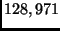
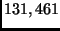
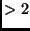
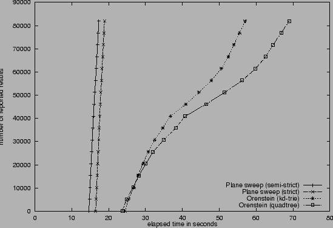

When developing new query processing techniques researchers strive
for an experimental comparison of their approach to already
established ones. There are at least two important requirements
for an experimental comparison [ZMR96]: the experiment should
be fair (i.e., the approaches should be based on the same
building blocks) and reproducible (i.e., other researchers
should be able to repeat the experiments easily). XXL is designed
as a platform for experimental comparisons where the above
mentioned requirements can be satisfied.
Fair:
XXL provides a rich infrastructure for the implementation of new
query processing techniques. The developer will employ the
infrastructure since it largely facilitates the burden of
programming. As a side effect, this leads to a better
comparability of different approaches and hence, fair comparisons
are easily possible.
Reproducible:
Applications implemented in Java using XXL are running under
different operating systems and hardware platforms. Moreover, XXL
is available for download [Dat01] and includes a full
documentation. Since XXL contains many useful building blocks,
applications are likely be written in a high-level style that
makes it easy to understand the underlying semantics. These are
important properties for reproducible code.
Table 1:
Description of the data sets
data set
description
#MBRs
LA_RR
railways and rivers LA

LA_ST
streets LA

Table 2:
Elapsed time of the algorithms in seconds
algorithms
flat file
Cloudscape
SQL (nested loops)
-
 days
plane-sweep (hybrid)
11.0
17.4
plane-sweep (strict)
11.3
19.0
Orenstein (kd-trie)
52.5
58.2
Orenstein (quadtree)
66.5
70.7
In the following, we present an experimental comparison where we
examine the popular problem of processing a spatial join. Our
comparison shows results that are unique with respect to the
following issues. First, we examine the overhead of reading the
input data from a database in comparison to reading from flat
files. Second, our results are reported as a function of the
elapsed time, i.e., the number of results that are delivered since
the start of the algorithms. These results are seldom found in the
literature, though they are important in a demand-driven query
processor.
Each of the spatial tables corresponds to a set of rectilinear
minimum bounding rectangles (MBR) represented by columns for the
x- and y-coordinate of the lower left and the upper right corner.
In our experiments we used two different real data sets of the
TIGER database [Bur89] (see Table 1). The
data sets LA_RR and LA_ST contain the MBRs of different types of
line segments from the region of Los Angeles. In the following, we
present the experimental evaluation of five different spatial join
algorithms.
The first algorithm is an internal algorithm of Cloudscape, i.e.,
we executed an SQL statement on the two given tables specifying
the overlapping condition directly in the WHERE clause. The other
spatial joins correspond to algorithms provided by XXL. The second
algorithm is a plane sweep algorithm by Arge et.al. [APR$^+$98]
where the input is sorted in a strict manner using the sort-merge
routine of XXL. The third algorithm is an improved plane sweep
approach based on a hybrid sort-merge operator, i.e., the sorted
streams are created on demand by merging sorted runs [Gra94].
The fourth algorithm is the z-code join-algorithm by
Orenstein [Ore91] using kd-trie splits. The fifth is a
variant of this algorithm using quadtree splits.
Figure 2:
Elapsed time of spatial join algorithms in Cloudscape

Our experiments were performed on a PC with an AMD processor (Athlon MHz, MB main memory) under Windows 2000. Since main memory was
large enough, the entire join phase was performed without any disk access. Figure 2
depicts the number of computed results of the spatial joins as a function of the
elapsed time where the input was from a Cloudscape database. Table 2
shows the total elapsed time of the algorithms. Since Cloudscape makes use of
a simple nested-loops algorithm, the total elapsed time was more than days. After that we stopped the process. The other algorithms performed
the join in less than seconds, whereas the plane sweep algorithms are more efficient than
the ones that rely on multi-dimensional data structures. Results show that the
use of hybrid sorting pays off. Overall, the results of our experiments show the
necessity of using efficient algorithms for advanced query operators. DBMS like
Cloudscape are not able (and willing) to provide the right operators for specific
applications. As a first solution, these operators can be implemented on top of
the DBMS using a library like XXL which facilitates the coding. The overhead of
keeping the data in a DBMS is surprisingly low in comparison to using flat files
(see Table 2). This generally supports
our library approach.
Next:Online Aggregation of Large Up:Applications Previous:Connectivity to Cloudscape
Bernhard Seeger
2001-10-11